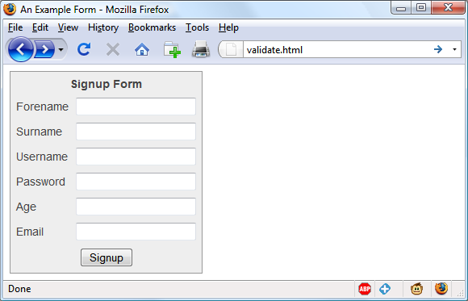
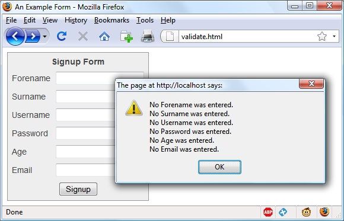
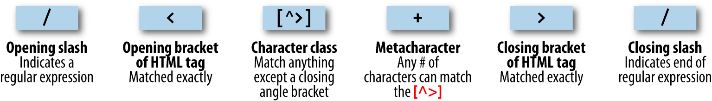
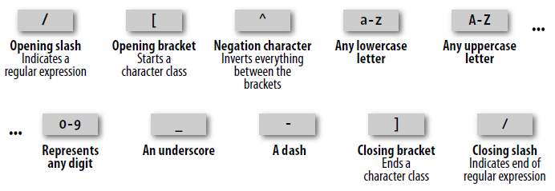
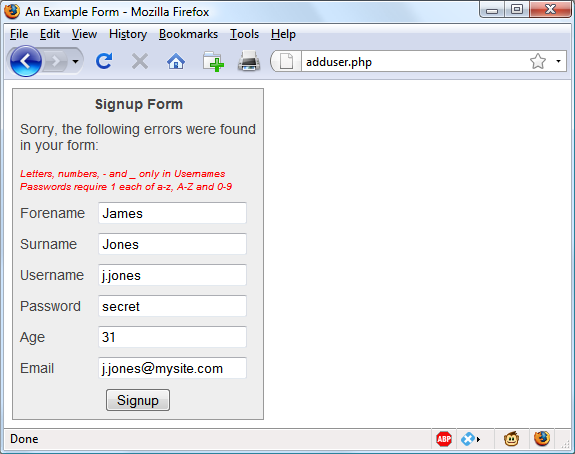

JavaScript and PHP Validation and Error Handling
With your solid foundation in both PHP and JavaScript, it’s time to bring these technologies together to create web forms that are as user-friendly as possible.
We’ll be using PHP to create the forms and JavaScript to perform client-side validation to ensure that the data is as complete and correct as it can be before it is submitted. Final validation of the input will then be made by PHP, which will, if necessary,
present the form again to the user for further modification.
In the process, this chapter will cover validation and regular expressions in both JavaScript and PHP.
Validating User Input with JavaScript
JavaScript validation should be considered an assistance more to your users than to
your websites because, as I have already stressed many times, you cannot trust any
data submitted to your server, even if it has supposedly been validated with JavaScript. This is because hackers can quite easily simulate your web forms and submit
any data of their choosing.
Another reason you cannot rely on JavaScript to perform all your input validation is
that some users disable JavaScript, or use browsers that don’t support it.
So the best types of validation to do in JavaScript are checking that fields have content
if they are not to be left empty, ensuring that email addresses conform to the proper
format, and ensuring that values entered are within expected bounds.
The validate.html Document (Part 1)
Let’s begin with a general sign-up form, common on most sites that offer memberships or registered users. The inputs requested will be
forename
,
surname
,
username
,
password
,
age
, and
email address
.
Example 16-1
provides a good template for such a
form.
Example 16-1. A form with JavaScript validation (part 1)
<!DOCTYPE html>
<html>
<head>
<title>An Example Form</title>
<style>
.signup {
border:1px solid #999999;
font: normal 14px helvetica;
color: #444444;
}
</style>
<script>
function validate(form)
{
fail = validateForename(form.forename.value)
fail += validateSurname(form.surname.value)
fail += validateUsername(form.username.value)
fail += validatePassword(form.password.value)
fail += validateAge(form.age.value)
fail += validateEmail(form.email.value)
if (fail == "") return true
else { alert(fail); return false }
}
</script>
</head>
<body>
<table border="0" cellpadding="2" cellspacing="5" bgcolor="#eeeeee">
<th colspan="2" align="center">Signup Form</th>
<form method="post" action="adduser.php" onsubmit="return validate(this)">
<tr><td>Forename</td>
<td><input type="text" maxlength="32" name="forename"></td></tr>
<tr><td>Surname</td>
<td><input type="text" maxlength="32" name="surname"></td></tr>
<tr><td>Username</td>
<td><input type="text" maxlength="16" name="username"></td></tr>
<tr><td>Password</td>
<td><input type="text" maxlength="12" name="password"></td></tr>
<tr><td>Age</td>
<td><input type="text" maxlength="3" name="age"></td></tr>
<tr><td>Email</td>
<td><input type="text" maxlength="64" name="email"></td></tr>
<tr><td colspan="2" align="center"><input type="submit" value="Signup"></td></tr>
</form>
</table>
</body>
</html>
As it stands, this form will display correctly but will not self-validate, because the
main validation functions have not yet been added. Even so, save it as
validate.html
,
and when you call it up in your browser, it will look like
Figure 16-1
.

Figure 16-1. The output from
Example 16-1
Let’s look at how this document is made up. The first few lines set up the document
and use a little CSS to make the form look a little less plain. The parts of the document related to JavaScript come next and are shown in bold.
Between the
<script>
and
</script>
tags lies a single function called
validate
that
itself calls up six other functions to validate each of the form’s input fields. We’ll get
to these functions shortly. For now I’ll just explain that they return either an empty
string if a field validates, or an error message if it fails. If there are any errors, the final
line of the script pops up an alert box to display them.
Upon passing validation, the
validate
function returns a value of
true
; otherwise, it
returns
false
. The return values from
validate
are important, because if it returns
false
, the form is prevented from being submitted. This allows the user to close the
alert pop up and make changes. If
true
is returned, no errors were encountered in
the form’s fields and so the form is allowed to be submitted.
The second part of this example features the HTML for the form with each field and
its name placed within its own row of a table. This is pretty straightforward HTML,
with the exception of the
onSubmit="return validate(this)"
statement within the
opening
<form>
tag. Using
onSubmit
, you can cause a function of your choice to be
called when a form is submitted. That function can perform some checking and
return a value of either
true
or
false
to signify whether the form should be allowed
to be submitted.
The
this
parameter is the current object (i.e., this form) and is passed to the
vali
date
function just discussed. The
validate
function receives this parameter as the
object
form
.
As you can see, the only JavaScript used within the form’s HTML is the call to
return
buried in the
onSubmit
attribute. Browsers with JavaScript disabled or not available
will simply ignore the
onSubmit
attribute, and the HTML will display just fine.
The validate.html Document (Part 2)
Now we come to
Example 16-2
, a set of six functions that do the actual form-field
validation.
I
suggest
that
you
type
all
of
this
second
part
and
save
it
in
the
<script>
...
</script>
section of
Example 16-1
, which you should already have saved
as
validate.html
.
Example 16-2. A form with JavaScript validation (part 2)
function validateForename(field)
{
return (field == "") ? "No Forename was entered.\n" : ""
}
function validateSurname(field)
{
return (field == "") ? "No Surname was entered.\n" : ""
}
function validateUsername(field)
{
if (field == "") return "No Username was entered.\n"
else if (field.length < 5)
return "Usernames must be at least 5 characters.\n"
else if (/[^a-zA-Z0-9_-]/.test(field))
return "Only a-z, A-Z, 0-9, - and _ allowed in Usernames.\n"
return ""
}
function validatePassword(field)
{
if (field == "") return "No Password was entered.\n"
else if (field.length < 6)
return "Passwords must be at least 6 characters.\n"
else if (!/[a-z]/.test(field) || ! /[A-Z]/.test(field) || !/[0-9]/.test(field))
return "Passwords require one each of a-z, A-Z and 0-9.\n"
return ""
}
function validateAge(field)
{
if (isNaN(field)) return "No Age was entered.\n"
else if (field < 18 || field > 110)
return "Age must be between 18 and 110.\n"
return ""
}
function validateEmail(field)
{
if (field == "") return "No Email was entered.\n"
else if (!((field.indexOf(".") > 0) &&
(field.indexOf("@") > 0)) || /[^a-zA-Z0-9.@_-]/.test(field))
return "The Email address is invalid.\n"
return ""
}
We’ll go through each of these functions in turn, starting with
validateForename
, so
you can see how validation works.
Validating the forename
validateForename
is quite a short function that accepts the parameter
field
, which
is the value of the forename passed to it by the
validate
function.
If this value is the empty string, an error message is returned; otherwise, an empty
string is returned to signify that no error was encountered.
If the user entered spaces in this field, it would be accepted by
validateForename
,
even though it’s empty for all intents and purposes. You can fix this by adding an
extra statement to trim whitespace from the field before checking whether it’s empty,
use a regular expression to make sure there’s something besides whitespace in the
field, or—as I do here—just let the user make the mistake and allow the PHP program to catch it on the server.
Validating the surname
The
validateSurname
function is almost identical to
validateForename
in that an
error is returned only if the surname supplied was an empty string. I chose not to
limit the characters allowed in either of the name fields to allow for possibilities such
as non-English and accented characters.
Validating the username
The
validateUsername
function is a little more interesting, because it has a more
complicated job. It has to allow through only the characters
a-z
,
A-Z
,
0-9
,
_
and
-
,
and ensure that usernames are at least five characters long.
The
if...else
statements commence by returning an error if
field
has not been filled in. If it’s not the empty string, but is fewer than five characters in length, another
error message is returned.
Then the JavaScript
test
function is called, passing a regular expression (which
matches any character that is
not
one of those allowed) to be matched against
field
(see
“Regular Expressions” on page 377
). If even one character that isn’t one of the
acceptable characters is encountered, the
test
function returns
true
, and so
valida
teUser
returns an error string.
Validating the password
Similar techniques are used in the
validatePassword
function. First the function
checks whether
field
is empty, and if it is, returns an error. Next, an error message is
returned if a password is shorter than six characters.
One of the requirements we’re imposing on passwords is that they must have at least
one each of a lowercase, uppercase, and numerical character, so the
test
function is
called three times, once for each of these cases. If any one of them returns
false
, one
of the requirements was not met and so an error message is returned. Otherwise, the
empty string is returned to signify that the password was OK.
Validating the age
validateAge
returns an error message if
field
is not a number (determined by a call
to the
isNaN
function), or if the age entered is lower than 18 or greater than 110. Your
applications may well have different or no age requirements. Again, upon successful
validation, the empty string is returned.
Validating the email
In the last and most complicated example, the email address is validated with
valida
teEmail
. After checking whether anything was actually entered, and returning an
error message if it wasn’t, the function calls the JavaScript
indexOf
function twice.
The first time a check is made to ensure there is a period (
.
) somewhere from at least
the second character of the field, and the second checks that an
@
symbol appears
somewhere at or after the second character.
If those two checks are satisfied, the
test
function is called to see whether any disallowed characters appear in the field. If any of these tests fail, an error message is
returned. The allowed characters in an email address are uppercase and lowercase letters, numbers, and the
_
,
-
, period, and
@
characters, as detailed in the regular expression passed to the
test
method. If no errors are found, the empty string is returned
to indicate successful validation. On the last line, the script and document are closed.

Figure 16-2
shows the result of the user clicking the Signup button without having
completed any fields.
Figure 16-2. JavaScript form validation in action
Using a separate JavaScript
file
Of course, because they are generic in construction and could apply to many types of
validations you might require, these six functions make ideal candidates for moving
out into a separate JavaScript file. You could name the file something like
validate_functions.js
and include it right after the initial script section in
Example 16-1
,
using the following statement:
<script src="validate_functions.js"></script>
Regular Expressions
Let’s look a little more closely at the pattern matching we have been doing. We’ve
achieved it using
regular expressions
, which are supported by both JavaScript and
PHP. They make it possible to construct the most powerful of pattern-matching algorithms within a single expression.
Matching Through Metacharacters
Every regular expression must be enclosed in slashes. Within these slashes, certain
characters have special meanings; they are called
metacharacters
. For instance, an
asterisk (
*
) has a meaning similar to what you have seen if you use a shell or Windows command prompt (but not quite the same). An asterisk means, “The text you’re
trying to match may have any number of the preceding characters—or none at all.”
For instance, let’s say you’re looking for the name
Le Guin
and know that someone
might spell it with or without a space. Because the text is laid out strangely (for
instance, someone may have inserted extra spaces to right-justify lines), you could
have to search for a line such as this:
The difficulty of classifying Le Guin's works
So you need to match
LeGuin
, as well as
Le
and
Guin
separated by any number of
spaces. The solution is to follow a space with an asterisk:
/Le *Guin/
There’s a lot more than the name
Le Guin
in the line, but that’s OK. As long as the
regular expression matches some part of the line, the
test
function returns a true
value. What if it’s important to make sure the line contains nothing but
Le Guin
? I’ll
show you how to ensure that later.
Suppose that you know there is always at least one space. In that case, you could use
the plus sign (
+
), because it requires at least one of the preceding characters to be
present:
/Le +Guin/
Fuzzy Character Matching
The dot (
.
) is particularly useful, because it can match anything except a newline.
Suppose that you are looking for HTML tags, which start with
<
and end with
>
. A
simple way to do so is shown here:
/<.*>/
The dot matches any character, and the
*
expands it to match zero or more characters, so this is saying, “Match anything that lies between
<
and
>
, even if there’s nothing.” You will match
<>
,
<em>
,
<br>
, and so on. But if you don’t want to match the
empty case,
<>
, you should use
+
instead of
*
, like this:
/<.+>/
The plus sign expands the dot to match one or more characters, saying, “Match anything that lies between
<
and
>
as long as there’s at least one character between them.”
You will match
<em>
and
</em>
,
<h1>
and
</h1>
, and tags with attributes, such as this:
<a href="www.mozilla.org">
Unfortunately, the plus sign keeps on matching up to the last
>
on the line, so you
might end up with this:
<h1><b>Introduction</b></h1>
A lot more than one tag! I’ll show a better solution later in this section.
If you use the dot on its own between the angle brackets, without
following it with either a
+
or
*
, then it matches a single character;
you will match
<b>
and
<i>
but
not
<em>
or
<textarea>
.
If you want to match the dot character itself (
.
), you have to escape it by placing a
backslash (
\
) before it, because otherwise it’s a metacharacter and matches anything.
As an example, suppose you want to match the floating-point number
5.0
. The regular expression is as follows:
/5\.0/
The backslash can escape any metacharacter, including another backslash (in case
you’re trying to match a backslash in text). However, to make things a bit confusing,
you’ll see later how backslashes sometimes give the following character a special
meaning.
We just matched a floating-point number. But perhaps you want to match
5.
as well
as
5.0
, because both mean the same thing as a floating-point number. You also want
to match
5.00
,
5.000
, and so forth—any number of zeros is allowed. You can do this
by adding an asterisk, as you’ve seen:
/5\.0*/
Grouping Through Parentheses
Suppose you want to match powers of increments of units, such as kilo, mega, giga,
and tera. In other words, you want all the following to match:
1,000
1,000,000
1,000,000,000
1,000,000,000,000
...
The plus sign works here, too, but you need to group the string
,000
so the plus sign
matches the whole thing. The regular expression is as follows:
/1(,000)+ /
The parentheses mean “treat this as a group when you apply something such as a plus
sign.”
1,00,000
and
1,000,00
won’t match because the text must have a 1 followed by
one or more complete groups of a comma followed by three zeros.
The space after the
+
character indicates that the match must end when a space is
encountered. Without it,
1,000,00
would incorrectly match because only the first
1,000
would be taken into account, and the remaining
,00
would be ignored. Requiring a space afterward ensures that matching will continue right through to the end of
a number.
Character Classes
Sometimes you want to match something fuzzy, but not so broad that you want to use
a dot. Fuzziness is the great strength of regular expressions: they allow you to be as
precise or vague as you want.
One of the key features supporting fuzzy matching is the pair of square brackets,
[]
.
It matches a single character, like a dot, but inside the brackets you put a list of things
that can match. If any of those characters appears, the text matches. For instance, if
you wanted to match both the American spelling
gray
and the British spelling
grey
,
you could specify the following:
/gr[ae]y/
After the
gr
in the text you’re matching, there can be either an
a
or an
e
. But there
must be only one of them: whatever you put inside the brackets matches exactly one
character. The group of characters inside the brackets is called a
character class
.
Indicating a Range
Inside the brackets, you can use a hyphen (
-
) to indicate a range. One very common
task is matching a single digit, which you can do with a range as follows:
/[0-9]/
Digits are such a common item in regular expressions that a single character is provided to represent them:
\d
. You can use it in place of the bracketed regular expression to match a digit:
/\d/
Negation
One other important feature of the square brackets is
negation
of a character class.
You can turn the whole character class on its head by placing a caret (
^
) after the
opening bracket. Here it means, “Match any characters
except
the following.” So let’s
say you want to find instances of
Yahoo
that lack the following exclamation point.
(The name of the company officially contains an exclamation point!) You could do it
as follows:
/Yahoo[^!]/
The character class consists of a single character—an exclamation point—but it is
inverted by the preceding
^
. This is actually not a great solution to the problem—for
instance, it fails if
Yahoo
is at the end of the line, because then it’s not followed by
anything
, whereas the brackets must match a character. A better solution involves
negative
lookahead
(matching something that is not followed by anything else), but
that’s beyond the scope of this book.
Some More-Complicated Examples
With an understanding of character classes and negation, you’re ready now to see a
better solution to the problem of matching an HTML tag. This solution avoids going
past the end of a single tag, but still matches tags such as
<em>
and
</em>
as well as
tags with attributes such as this:
<a href="www.mozilla.org">
Here is one solution:
/<[^>]+>/
That regular expression may look like I just dropped my teacup on the keyboard, but
it is perfectly valid and very useful. Let’s break it apart.
Figure 16-3
shows the various
elements, which I’ll describe one by one.

Figure 16-3. Breakdown of a typical regular expression
The elements are as follows:
/
Opening slash that indicates this is a regular expression.
<
Opening bracket of an HTML tag. This is matched exactly; it is not a metacharacter.
[^>]
Character class. The embedded ^> means “match anything except a closing angle bracket.”
+
Allows any number of characters to match the previous [^>], as long as there is at least one of them.
>
Closing bracket of an HTML tag. This is matched exactly.
/
Closing slash that indicates the end of the regular expression.
Another solution to the problem of matching HTML tags is to use
a nongreedy operation. By default, pattern matching is greedy,
returning the longest match possible. Nongreedy matching finds
the shortest possible match, and its use is beyond the scope of this
book, but there are more details at
http://oreilly.com/catalog/regex/
chapter/ch04.html
.
We are going to look now at one of the expressions from
Example 16-1
, where the
validateUsername
function is used:
/[^a-zA-Z0-9_-]/
Figure 16-4
shows the various elements.

Figure 16-4. Breakdown of the validateUsername regular expression
Let’s look at these elements in detail:
/
Opening slash that indicates this is a regular expression.
[
Opening bracket that starts a character class.
^
Negation character: inverts everything else between the brackets.
a-z
Represents any lowercase letter.
A-Z
Represents any uppercase letter.
0-9
Represents any digit.
_
An underscore.
-
A dash.
]
Closing bracket that ends a character class.
/
Closing slash that indicates the end of the regular expression.
There are two other important metacharacters. They “anchor” a regular expression by
requiring that it appear in a particular place. If a caret (
^
) appears at the beginning of
the regular expression, the expression has to appear at the beginning of a line of text;
otherwise, it doesn’t match. Similarly, if a dollar sign (
$
) appears at the end of the regular expression, the expression has to appear at the end of a line of text.
It may be somewhat confusing that
^
can mean “negate the character class” inside square brackets and “match the beginning of the
line” if it’s at the beginning of the regular expression. Unfortunately,
the same character is used for two different things, so take care
when using it.
We’ll finish our exploration of regular expression basics by answering a question
raised earlier: suppose you want to make sure there is nothing extra on a line besides
the regular expression? What if you want a line that has “Le Guin” and nothing else?
We can do that by amending the earlier regular expression to anchor the two ends:
/^Le *Guin$/
Summary of Metacharacters
Table 16-1
shows the metacharacters available in regular expressions.
Table 16-1. Regular expression metacharacters
| Metacharacters |
Description |
| / |
Begins and ends the regular expression |
| . |
Matches any single character except the newline |
| element* |
Matches element zero or more times |
| element+ |
Matches element one or more times |
| element? |
Matches element zero or one times |
| [characters] |
Matches a character out of those contained within the brackets |
| [^characters] |
Matches a single character that is not contained within the brackets |
| (regex) |
Treats the regex as a group for counting or a following *,+, or? |
| left|right |
Matches either left or right |
| [l-r] |
Matches a range of characters between l and r |
| ^ |
Requires match to be at the string’s start |
| $ |
Requires match to be at the string’s end |
| \b |
Matches a word boundary |
| \B |
Matches where there is not a word boundary |
| \d |
Matches a single digit |
| \D |
Matches a single nondigit |
| \n |
Matches a newline character |
| \s |
Matches a whitespace character |
| \S |
Matches a nonwhitespace character |
| \t |
Matches a tab character |
| \w |
Matches a word character (a-z,A-Z,0-9, and_) |
| \W |
Matches a nonword character (anything but a-z,A-Z,0-9, and_) |
| \x |
x (useful if x is a metacharacter, but you really want x) |
| {n} |
Matches exactly n times |
| {n,} |
Matches n times or more |
| {min,max} |
Matches at least min and at most max times |
Provided with this table, and looking again at the expression
/[^a-zA-Z0-9_]/
, you
can see that it could easily be shortened to
/[^\w]/
because the single metacharacter
\w
(with a lowercase
w
) specifies the characters
a-z
,
A-Z
,
0-9
, and
_
.
In fact, we can be cleverer than that, because the metacharacter
\W
(with an uppercase
W
) specifies all characters
except
for
a-z
,
A-Z
,
0-9
, and
_
. Therefore, we could also
drop the
^
metacharacter and simply use
/[\W]/
for the expression.
To give you more ideas of how this all works,
Table 16-2
shows a range of expressions
and the patterns they match.
Table 16-2. Some example regular expressions
| Example |
Matches |
| r |
The first
r
in
The quick brown |
| rec[ei][ei]ve |
Either of
receive
or
recieve
(but also
receeve
or
reciive
) |
| rec[ei]{2}ve |
Either of
receive
or
recieve
(but also
receeve
or
reciive
) |
| rec(ei|ie)ve |
Either of
receive
or
recieve
(but not
receeve
or
reciive
) |
| cat |
The word
cat
in
I like cats and dogs |
| cat|dog |
Either of the words
cat
or
dog
in
I like cats and dogs |
| \. |
.
(the
\
is necessary because
.
is a metacharacter) |
| 5\.0* |
5.
,
5.0
,
5.00
,
5.000
, etc. |
| [a-f] |
Any of the characters
a
,
b
,
c
,
d
,
e
or
f |
| cats$ |
Only the final
cats
in
My cats are friendly cats |
| ^my |
Only the first
my
in
my cats are my pets |
| \d{2,3} |
Any two- or three-digit number (
00
through
999
) |
| 7(,000)+ |
7,000
;
7,000,000
;
7,000,000,000
;
7,000,000,000,000
; etc. |
| [\w]+ |
Any word of one or more characters |
| [\w]{5} |
Any five-letter word |
General Modifiers
Some additional modifiers are available for regular expressions:
•
/g
enables
global
matching. When using a replace function, specify this modifier
to replace all matches, rather than only the first one.
•
/i
makes the regular expression match case-insensitive. Thus, instead of
/[a-zA-
Z]/
, you could specify
/[a-z]/i
or
/[A-Z]/i
.
•
/m
enables multiline mode, in which the caret (
^
) and dollar (
$
) match before and
after any newlines in the subject string. Normally, in a multiline string,
^
matches
only at the start of the string, and
$
matches only at the end of the string.
For example, the expression
/cats/g
will match both occurrences of the word
cats
in
the sentence
I like cats, and cats like me
. Similarly,
/dogs/gi
will match both occurrences of the word
dogs
(
Dogs
and
dogs
) in the sentence
Dogs like other dogs
, because
you can use these specifiers together.
Using Regular Expressions in JavaScript
In JavaScript, you will use regular expressions mostly in two methods:
test
(which
you have already seen) and
replace
. Whereas
test
just tells you whether its argument matches the regular expression,
replace
takes a second parameter: the string to
replace the text that matches. Like most functions,
replace
generates a new string as
a return value; it does not change the input.
To compare the two methods, the following statement just returns
true
to let us
know that the word
cats
appears at least once somewhere within the string:
document.write(/cats/i.test("Cats are funny. I like cats."))
But the following statement replaces both occurrences of the word
cats
with the word
dogs
, printing the result. The search has to be global (
/g
) to find all occurrences, and
case-insensitive (
/i
) to find the capitalized
Cats
:
document.write("Cats are friendly. I like cats.".replace(/cats/gi,"dogs"))
If you try out the statement, you’ll see a limitation of
replace
: because it replaces text
with exactly the string you tell it to use, the first word
Cats
is replaced by
dogs
instead
of
Dogs
.
Using Regular Expressions in PHP
The most common regular expression functions that you are likely to use in PHP are
preg_match
,
preg_match_all
, and
preg_replace
.
To test whether the word
cats
appears anywhere within a string, in any combination
of upper- and lowercase, you could use
preg_match
like this:
$n = preg_match("/cats/i", "Cats are crazy. I like cats.");
Because PHP uses
1
for
TRUE
and
0
for
FALSE
, the preceding statement sets
$n
to
1
.
The first argument is the regular expression, and the second is the text to match. But
preg_match
is actually a good deal more powerful and complicated, because it takes a
third argument that shows what text matched:
$n = preg_match("/cats/i", "Cats are curious. I like cats.", $match);
echo "$n Matches: $match[0]";
The third argument is an array (here, given the name
$match
). The function puts the
text that matches into the first element, so if the match is successful, you can find the
text that matched in
$match[0]
. In this example, the output lets us know that the
matched text was capitalized:
1 Matches: Cats
If you wish to locate all matches, you use the
preg_match_all
function, like this:
$n = preg_match_all("/cats/i", "Cats are strange. I like cats.", $match);
echo "$n Matches: ";
for ($j=0 ; $j < $n ; ++$j) echo $match[0][$j]." ";
As before,
$match
is passed to the function and the element
$match[0]
is assigned the
matches made, but this time as a subarray. To display the subarray, this example iterates through it with a
for
loop.
When you want to replace part of a string, you can use
preg_replace
as shown here.
This example replaces all occurrences of the word
cats
with the word
dogs
, regardless
of case:
echo preg_replace("/cats/i", "dogs", "Cats are furry. I like cats.");
The subject of regular expressions is a large one, and entire books
have been written about it. If you would like further information, I
suggest the
Wikipedia entry
, or Jeffrey Friedl’s excellent book
Mastering Regular Expressions
.
Redisplaying a Form After PHP Validation
OK, back to form validation. So far we’ve created the HTML document
validate.html
,
which will post through to the PHP program
adduser.php
, but only if JavaScript validates the fields or if JavaScript is disabled or unavailable.
So now it’s time to create
adduser.php
to receive the posted form, perform its own validation,
and
then
present
the
form
again
to
the
visitor
if
the
validation
fails.
Example 16-3
contains the code that you should type and save (or download from the
companion website).
Example 16-3.
The adduser.php program
<?php // adduser.php
// The PHP code
$forename = $surname = $username = $password = $age = $email = "";
if (isset($_POST['forename']))
$forename = fix_string($_POST['forename']);
if (isset($_POST['surname']))
$surname = fix_string($_POST['surname']);
if (isset($_POST['username']))
$username = fix_string($_POST['username']);
if (isset($_POST['password']))
$password = fix_string($_POST['password']);
if (isset($_POST['age']))
$age = fix_string($_POST['age']);
if (isset($_POST['email']))
$email = fix_string($_POST['email']);
$fail = validate_forename($forename);
$fail .= validate_surname($surname);
$fail .= validate_username($username);
$fail .= validate_password($password);
$fail .= validate_age($age);
$fail .= validate_email($email);
echo "<!DOCTYPE html>\n<html><head><title>An Example Form</title>";
if ($fail == "")
{
echo "</head><body>Form data successfully validated:
$forename, $surname, $username, $password, $age, $email.</body></html>";
// This is where you would enter the posted fields into a database,
// preferably using hash encryption for the password.
exit;
}
echo <<<_END
<!-- The HTML/JavaScript section -->
<style>
.signup {
border: 1px solid #999999;
font: normal 14px helvetica; color:#444444;
}
</style>
<script>
function validate(form)
{
fail = validateForename(form.forename.value)
fail += validateSurname(form.surname.value)
fail += validateUsername(form.username.value)
fail += validatePassword(form.password.value)
fail += validateAge(form.age.value)
fail += validateEmail(form.email.value)
if (fail == "") return true
else { alert(fail); return false }
}
function validateForename(field)
{
return (field == "") ? "No Forename was entered.\n" : ""
}
function validateSurname(field)
{
return (field == "") ? "No Surname was entered.\n" : ""
}
function validateUsername(field)
{
if (field == "") return "No Username was entered.\n"
else if (field.length < 5)
return "Usernames must be at least 5 characters.\n"
else if (/[^a-zA-Z0-9_-]/.test(field))
return "Only a-z, A-Z, 0-9, - and _ allowed in Usernames.\n"
return ""
}
function validatePassword(field)
{
if (field == "") return "No Password was entered.\n"
else if (field.length < 6)
return "Passwords must be at least 6 characters.\n"
else if (!/[a-z]/.test(field) || ! /[A-Z]/.test(field) ||
!/[0-9]/.test(field))
return "Passwords require one each of a-z, A-Z and 0-9.\n"
return ""
}
function validateAge(field)
{
if (isNaN(field)) return "No Age was entered.\n"
else if (field < 18 || field > 110)
return "Age must be between 18 and 110.\n"
return ""
}
function validateEmail(field)
{
if (field == "") return "No Email was entered.\n"
else if (!((field.indexOf(".") > 0) &&
(field.indexOf("@") > 0)) || /[^a-zA-Z0-9.@_-]/.test(field))
return "The Email address is invalid.\n"
return ""
}
</script>
</head>
<body>
<table border="0" cellpadding="2" cellspacing="5" bgcolor="#eeeeee">
<th colspan="2" align="center">Signup Form</th>
<tr><td colspan="2">Sorry, the following errors were found<br>
in your form: <p><font color=red size=1><i>$fail</i></font></p>
</td></tr>
<form method="post" action="adduser.php" onSubmit="return validate(this)">
<tr><td>Forename</td>
<td><input type="text" maxlength="32" name="forename" value="$forename">
</td></tr><tr><td>Surname</td>
<td><input type="text" maxlength="32" name="surname" value="$surname">
</td></tr><tr><td>Username</td>
<td><input type="text" maxlength="16" name="username" value="$username">
</td></tr><tr><td>Password</td>
<td><input type="text" maxlength="12" name="password" value="$password">
</td></tr><tr><td>Age</td>
<td><input type="text" maxlength="3" name="age" value="$age">
</td></tr><tr><td>Email</td>
<td><input type="text" maxlength="64" name="email" value="$email">
</td></tr><tr><td colspan="2" align="center"><input type="submit"
value="Signup"></td></tr>
</form>
</table>
</body>
</html>
_END;
// The PHP functions
function validate_forename($field)
{
return ($field == "") ? "No Forename was entered<br>": "";
}
function validate_surname($field)
{
return($field == "") ? "No Surname was entered<br>" : "";
}
function validate_username($field)
{
if ($field == "") return "No Username was entered<br>";
else if (strlen($field) < 5)
return "Usernames must be at least 5 characters<br>";
else if (preg_match("/[^a-zA-Z0-9_-]/", $field))
return "Only letters, numbers, - and _ in usernames<br>";
return "";
}
function validate_password($field)
{
if ($field == "") return "No Password was entered<br>";
else if (strlen($field) < 6)
return "Passwords must be at least 6 characters<br>";
else if (!preg_match("/[a-z]/", $field) ||
!preg_match("/[A-Z]/", $field) ||
!preg_match("/[0-9]/", $field))
return "Passwords require 1 each of a-z, A-Z and 0-9<br>";
return "";
}
function validate_age($field)
{
if ($field == "") return "No Age was entered<br>";
else if ($field < 18 || $field > 110)
return "Age must be between 18 and 110<br>";
return "";
}
function validate_email($field)
{
if ($field == "") return "No Email was entered<br>";
else if (!((strpos($field, ".") > 0) &&
(strpos($field, "@") > 0)) || preg_match("/[^a-zA-Z0-9.@_-]/", $field))
return "The Email address is invalid<br>";
return "";
}
function fix_string($string)
{
if (get_magic_quotes_gpc()) $string = stripslashes($string);
return htmlentities ($string);
}
?>
In this example, all input is sanitized prior to use, even passwords,
which—since they may contain characters used to format HTML—
will be changed into HTML entities. For example,
&
will become
&
and
<
will become
<
, and so on. If you will be using a
hash function to store encrypted passwords, this will not be an
issue as long as when you later check the password entered, it is
sanitized in the same way, so that the same inputs will be compared.
The result of submitting the form with JavaScript disabled (and two fields incorrectly
completed) is shown in
Figure 16-5
.

Figure 16-5. The form as represented after PHP validation fails
I have put the PHP section of this code (and changes to the HTML section) in a bold
typeface
so
that
you
can
more
clearly
see
the
difference
between
this
and
Example 16-1
and
Example 16-2
.
If you browsed through this example (or typed it or downloaded it from the
http://
lpmj.net
website), you’ll have seen that the PHP code is almost a clone of the JavaScript code; the same regular expressions are used to validate each field in very similar functions.
But there are a couple of things to note. First, the
fix_string
function (right at the
end) is used to sanitize each field and prevent any attempts at code injection from
succeeding.
Also, you will see that the HTML from
Example 16-1
has been repeated in the PHP
code within a
<<<_END..._END;
structure, displaying the form with the values that
the visitor entered the previous time. You do this by simply adding an extra
value
parameter to each
<input>
tag (such as
value="$forename"
). This courtesy is highly
recommended so that the user has to edit only the previously entered values, and
doesn’t have to type the fields all over again.
In the real world, you probably wouldn’t start with an HTML form
such as the one in
Example 16-1
. Instead, you’d be more likely to go
straight ahead and write the PHP program in
Example 16-3
, which
incorporates all the HTML. And, of course, you’d also need to
make a minor tweak for the case when it’s the first time the program is called up, to prevent it from displaying errors when all the
fields are empty. You also might drop the six JavaScript functions
into their own
.js
file for separate inclusion.
Now that you’ve seen how to bring all of PHP, HTML, and JavaScript together, the
next chapter will introduce Ajax (Asynchronous JavaScript and XML), which uses
JavaScript calls to the server in the background to seamlessly update portions of a
web page, without having to resubmit the entire page to the web server.